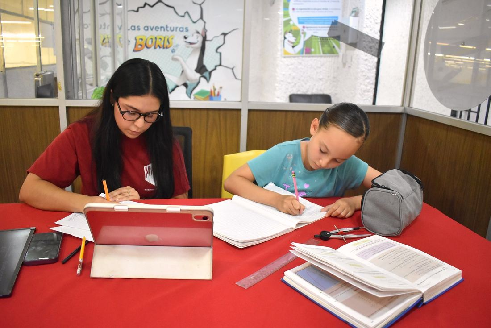
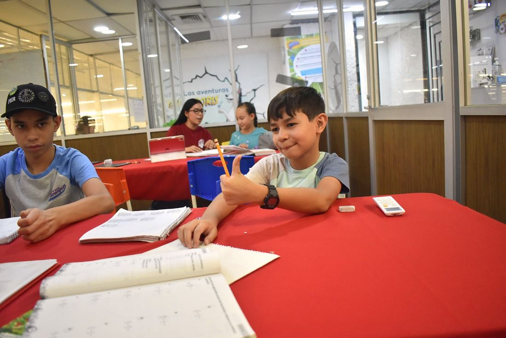
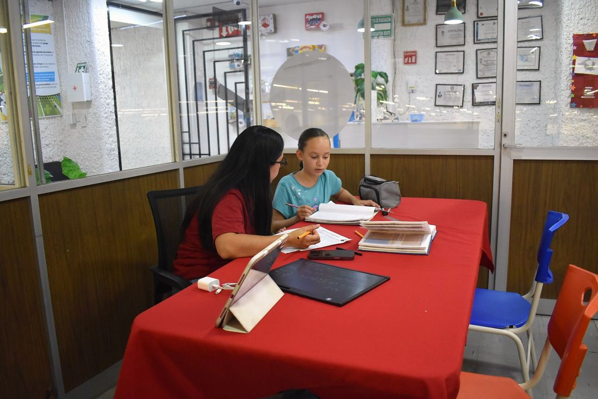
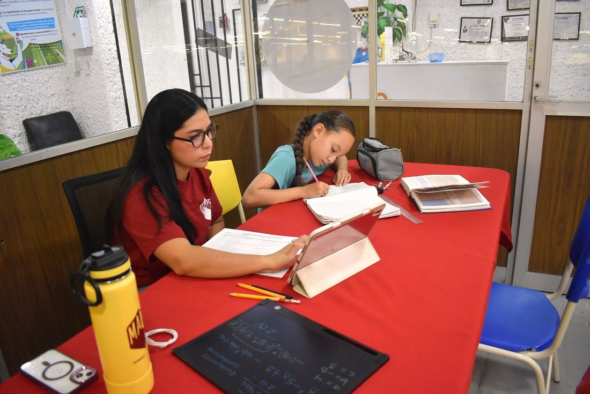
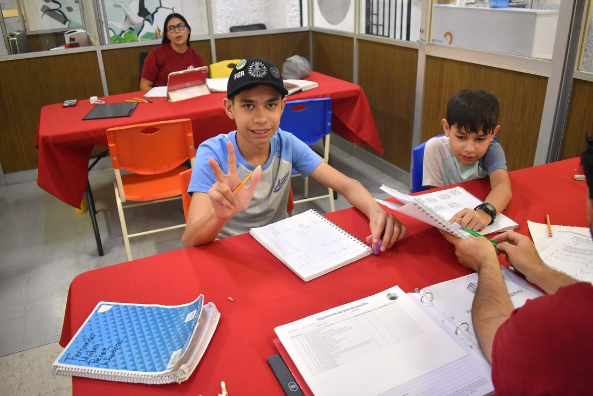
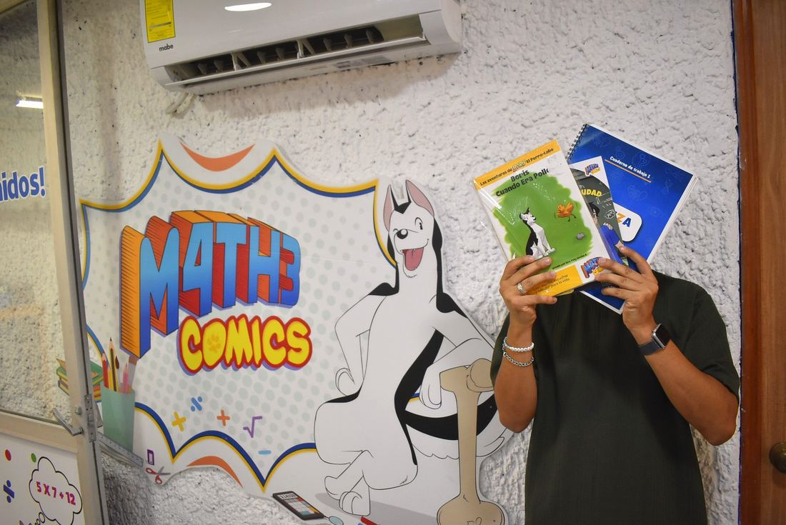
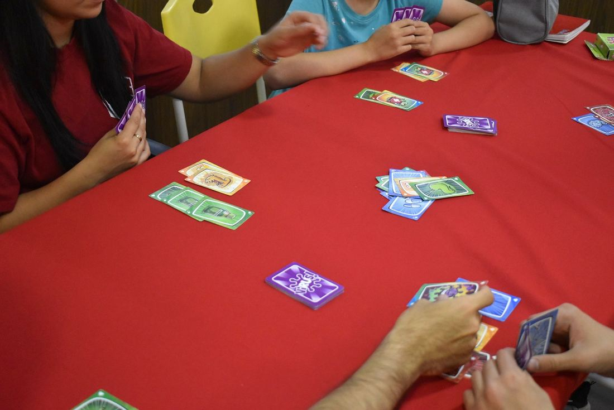
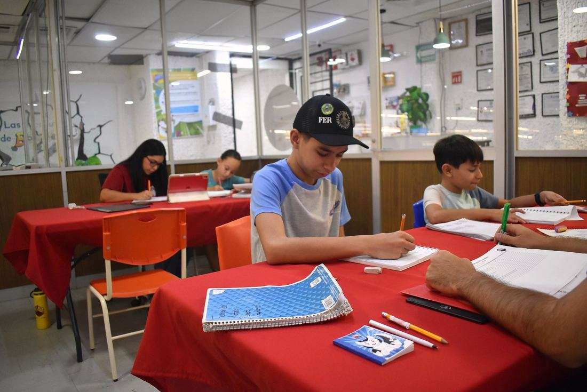
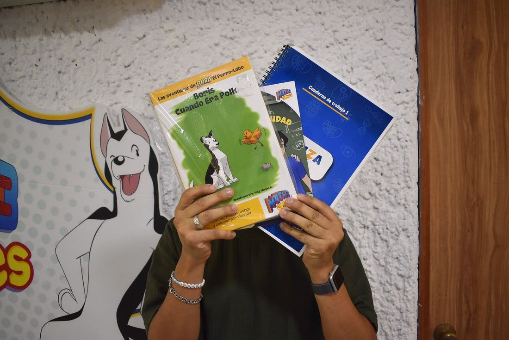

Regularización, acompañamiento, preparación para admisión, bienestar cognitivo y material educativo — todo con neuroeducación y cómics.


Regulariza al alumno y fortalece los conocimientos y habilidades que necesita para alcanzar el nivel académico correspondiente a su grado escolar actual.
¿Para quién es?
¿Qué incluye?


Acompaña al alumno durante su ciclo escolar para apoyarlo con las actividades y necesidades académicas que surjan, favoreciendo una mejor organización, comprensión y desempeño escolar.
¿Para quién es?
¿Qué incluye?


Prepara al alumno para presentar exámenes de admisión a preparatoria o universidad, fortaleciendo las áreas académicas necesarias y desarrollando estrategias para responder eficazmente el examen. Grupal o personalizada, en línea o presencial.
¿Qué incluye?

Fortalece y mantén activas las funciones cognitivas, favoreciendo la salud mental, la autonomía y el bienestar emocional a lo largo del tiempo.
¿Qué incluye?


4 cómics + lotería + tarjetas positivas. Un producto STEAM que ofrece práctica matemática, comprensión lectora, procedimientos para resolución de problemas y uso de tecnología dentro de la historieta, además de habilidades socio-afectivas y manejo de emociones.
¿Qué incluye?